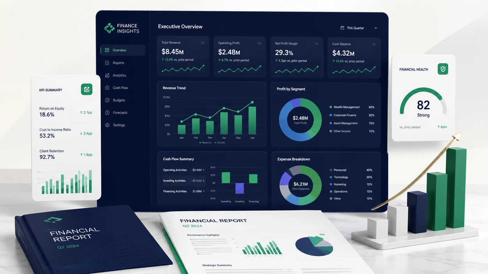

Soliq • 2026-07-01
Soliq qonunchiligidagi o‘zgarishlarni biznes jarayonlariga qanday moslashtirish kerak?
Hisobotlar, shartnomalar, QQS va kontragentlar nazoratini yangilash bo‘yicha amaliy yondashuv.
Ko‘proq o‘qish →Buxgalteriya, soliq, audit va moliyaviy boshqaruv bo‘yicha foydali materiallar.

Hisobotlar, shartnomalar, QQS va kontragentlar nazoratini yangilash bo‘yicha amaliy yondashuv.
Ko‘proq o‘qish →Bank, kassa, kontragentlar, qoldiqlar va hisobotlarni qayta tiklash tartibi.
Ko‘proq o‘qish →Foyda, pul oqimi, qarzdorlik va rentabellikni bir panelda ko‘rish imkoniyati.
Ko‘proq o‘qish →